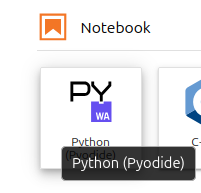

Installation
GlyApp on your Web Browser
On your favorite browser (I recommend Firefox), go to https://jupyter.org/try-jupyter/lab/
Start a new notebook by clicking on Python Pyodide
Copy the following code in the first section. Run the section with Shift+Enter keys or clicking on the button
import sys, os, re, pyodide, numpy as np, pandas as pd, scipy.ndimage
from datetime import date,time,timedelta,datetime
import matplotlib.pyplot as plt, matplotlib.dates as mdates
url='https://raw.githubusercontent.com/jorishey1234/glyapp/refs/heads/main/gly_toolbox_dev.py'
exec(pyodide.http.open_url(url).read())
After GlyApp is loaded (it can take some time depending on your computer and connection), you should get the answer :
Loading GlyApp dev version
GlyApp successfully loaded !
Hint
You can create as much notebook as you want, for instance one per patient or by study if necessary. Copy the header code all the time to initialize the notebook. When the browser is closed, the notebook is saved automatically in the Browser history. To avoid loosing data, it can be good to externaly save notebooks on a local disk from time to time (Right click on the notebook, then Download).
Start a new section in the notebook, clicking on .
If running for the first time, prepare the local environment folder structure and files with the command :
>>> init_environment()
Then you should be able to run glycemic statistics
>>> calc_glu('XX')
or get a plot on weekly intervals
>>> plot_patient('XX')
Hint
Any other patient data can now be added in try-jupyter by drag/drop a patient folder containing sensor data in the DATA_DIR, which is by default ./Data/patient/. As for the notebooks, the data is saved automatically when closing the browser, until you clear the history. To avoid loosing data, keep a local version of your DATA_DIR folder, and regularly download the results in the RESULTS_DIR folder (right click on the result file, then Download).
With python (v3.12) installed locally
Make sure you have the following packages installed. For instance with pip
pip install sys, os, re, pyodide, numpy, pandas, scipy, datetime, matplotlib
then, in python run
>>> from glyapp import *
>>> init_environment()
>>> calc_glu('XX')
>>> plot_patient('XX')
GlyApp File Structure
Default Environment Variables
- DATA_DIR = './Data/'
Path where raw sensor data are kept
- RESULT_DIR = './Patients/'
Path where Glyapp results are kept
Setting Environment Folders and Files
- init_environment(patient='XX')
Prepare the local folder structure for the first time where data has to be stored and results are written.
Create the sensor database if the file do not exist.
Create a test case with synthetic data for patient name XX.
Parameters
- patientstr, optional
Codename of the patient to create. The default is ‘XX’.
Returns
None.
- make_synthetic_gly_data(patient='XX', ndays=30, dt=15, gly_mean=150, gly_std=150, gly_corr=30, start_date='2025-01-01', seed=0)
Return a CSV file with synthetic glycemic data time series
Parameters
- patientstr, optional
Codename of patient to create. The default is ‘XX’.
- ndaysint, optional
Duration f the time serie in days. The default is 30.
- dtint, optional
Measure intervals in minuts. The default is 15.
- gly_meanfloat, optional
Mean glycemia. The default is 150.
- gly_stdfloat, optional
Standard deviation of glycemia. The default is 150.
- gly_corrfloat, optional
Time correlation of glycemia in min. The default is 30.
- start_datestr, optional
Start date of the timeserie. The default is “2025-01-01”.
- seedint, optional
Seed for random generator.
Returns
None.